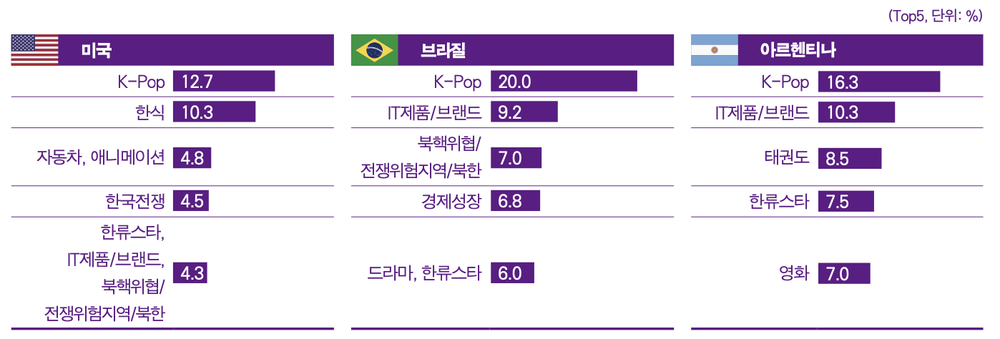
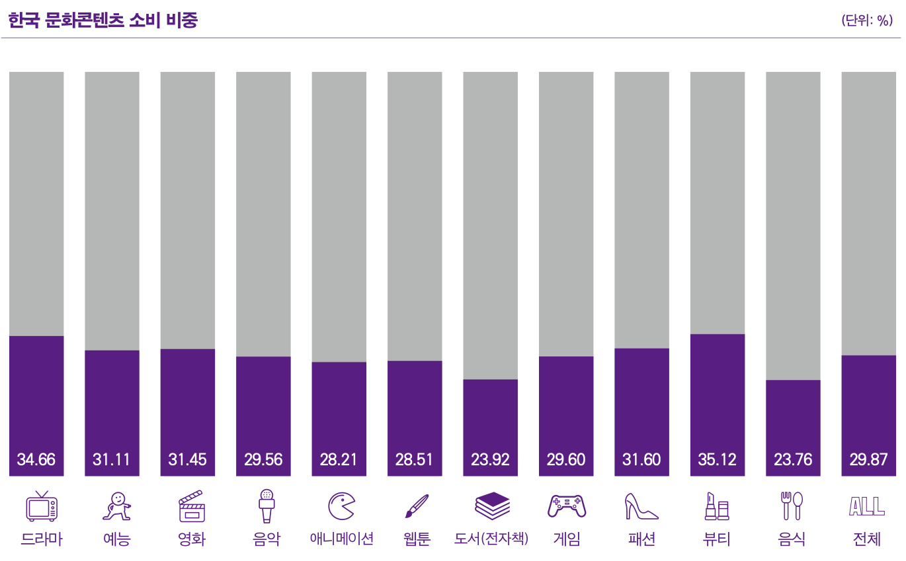
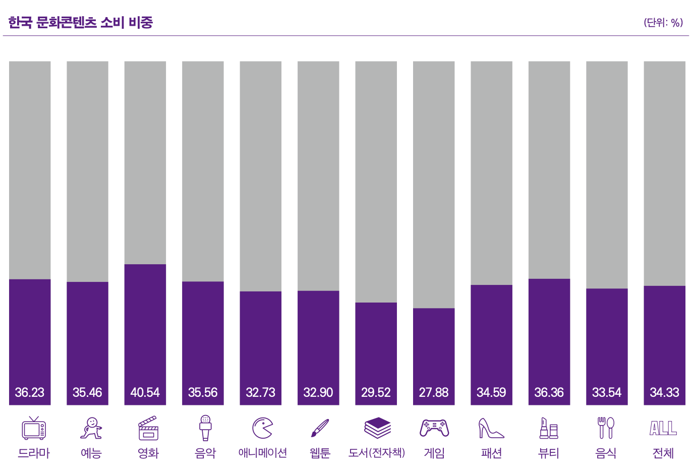
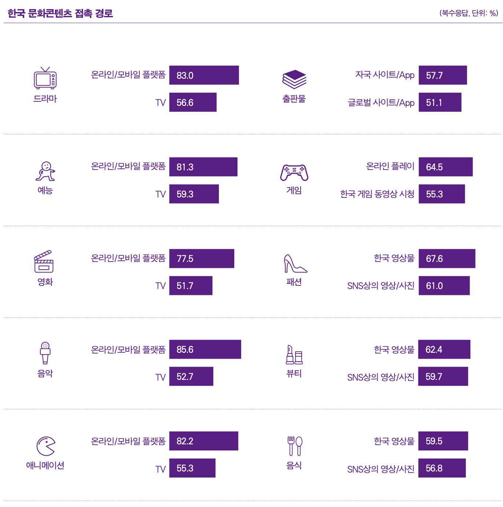

국가별 · 권역별 이슈
한류(한국) 인식
5권역 종합
중동과 아프리카를 제외한 모든 권역에서 ‘K-Pop’에 대한 응답이 가장 많았다. ‘K-Pop’은 2017 년부터 5년째 1위를 유지했다. 전년도 조사와 비교해 연상률은 2.8%p 감소했고 1위를 차지한 권역도 4개 에서 3개로 줄어들긴 했지만 여전히 ‘K-Pop’의 영향력은 큰 것으로 보인다. 모든 권역에서 ‘K-Pop’에 대한 연상률이 감소했는데 특히 아프리카에서 5.5%p 줄어 다른 지역과 비교해 감소폭이 상대적으로 더 컸다. ‘한식’은 전년도 조사와 비슷한 연상률을 기록하며 전 권역에서 상위권에 위치했고 중동에서 1위, 아시아 ・ 오세아니아, 유럽, 아프리카에서는 2위, 미주에서 3위에 올랐다. <오징어 게임> 글로벌 신드롬으로 ‘드라마’ 연상률이 전년 대비 1.1%p 증가했고 순위도 5위에서 3위로 두 계단 상승했다.

아시아 · 오세아니아
아시아 ・ 오세아니아 지역은 ‘K-Pop’, ‘한식’, ‘드라마’, ‘한류스타’, ‘IT제품/브랜드’ 순으로 연상률이 높았다. 전년도 조사와 마찬가지로 ‘K-Pop’과 ‘한식’이 각각 5개국과 3개국에서 1위를 차지하며 연상 이 미지 상위권을 양분했다. 태국, 말레이시아, 인도네시아, 베트남 등 아세안 지역에서 ‘K-Pop’에 대한 연상률이 가장 높았고, 중국, 일본, 대만 등 동아시아에서는 ‘한식’에 대한 연상률이 높았다. 특히 일본에서 ‘한식’은 30%에 육박하는 높은 응답률을 기록해 일본 내 ‘한식’의 인기를 확인할 수 있었다. 지난 5년과 마찬가지로 이번 조사에서도 유일하게 인도만 ‘IT제품/브랜드’의 연상률이 가장 높았 다. 그러나 응답률은 전년에 비해 소폭(1.8%p) 감소했다. 한편 ‘드라마’와 ‘한류스타’도 인도를 제외한 대부분 아시아・오세아니아 국가에서 상위 연상 이미지로 꼽혔다.

미주
미주 역시 전년과 마찬가지로 ‘K-Pop’ 연상률이 가장 높았다. 국가별로 살펴보면, 미국은 ‘K-Pop’ 응답률이 전년 조사 대비 2.5%p 감소했지만 ‘한식’에 내줬던 1위 자리를 탈환했다. 브라질 역시 전년보다 응답률이 7.2%p 감소하긴 했지만 여전히 높은 수치를 기록하며 ‘K-Pop’이 1위를 지켰다. 전년도부터 조사에 포함된 아르헨티나는 ‘K-Pop’이 16.3%의 응답률을 기록하며 2년 연속 1위를 기록했다. 한편 ‘IT제품/브랜드’와 ‘한류스타’는 3개국에서 모두 5위권 안에 포함되었다. 특히 브라질과 아르헨티나에서 ‘IT제품/브랜드’는 ‘K-Pop’에 이어 2위에 오르며 미주 전반에서 ‘IT제품/브랜드’의 인지도가 높은 수준임을 알 수 있었다.
유럽
유럽은 ‘K-Pop’, ‘한식’이 각 국가별로 연상 이미지 상위권에 위치한 가운데 ‘IT제품/브랜드’도 튀 르키예를 제외한 3개국에서 순위권에 올랐다. 프랑스와 영국에서는 전년도 조사에 이어 ‘K-Pop’이 1위를 지켰지만 프랑스의 ‘K-Pop’ 연상률은 2017년부터 매년 떨어지고 있고 이번 조사에서도 전년 대비 0.6%p 하락했다. 반면 ‘한류스타’ 연상률은 2.6%p 증가해 전년도 7위에서 다섯 계단 상승한 2위를 기록했다. ‘IT제품/브랜드’는 프랑스에서 3위, 영국과 러시아에서는 4위에 올라 유럽 대부분 지역에서 높은 인지도를 보였다. 러시아는 ‘뷰티 제품’과 ‘자동차’가 각각 연상 이미지 1, 3위에 올라 전년과 마찬가지로 나머지 국가와 다른 양상을 보였고, 튀르키예의 경우 ‘한국전쟁’이 전년도에 이어 1위를 기록해 여전히 군사 동맹국의 이미지가 강한 것으로 나타났다.

중동 · 아프리카
UAE에서는 ‘한식’이 4년 연속 연상률 1위를 기록했던 ‘K-Pop’을 제치고 선두를 차지했고 응답률 도 소폭(2.5%p) 증가했다. 다음으로 ‘K-Pop’, ‘드라마’, ‘한류스타’, ‘영화’에 대한 연상률이 높은 것으로 조 사돼 소비재 연상률이 높았던 전년 조사 대비 전반적으로 문화콘텐츠에 대한 응답률이 증가했다. 남아공의 경우 전년도에 이어 ‘IT제품/브랜드’가 선두를 차지했다. 이어 ‘한식’, ‘영화’, ‘태권도’, ‘K-Pop’, ‘패션’, ‘애니메이션’이 상위권을 형성했는데 전년도 조사에서 11.0%의 연상률로 2위를 기록했던 ‘K-Pop’의 낙폭(5.5%p)이 눈에 띈다.

한류 소비
아시아 · 오세아니아
아시아 · 오세아니아 지역의 전체 문화콘텐츠 소비량 대비 한류콘텐츠 소비량 비중은 29.87%였고, 비중이 가장 높은 콘텐츠는 뷰티(35.12%)인 것으로 조사됐다. 그 다음으로 드라마, 패션, 영화, 예능 순 으로 비중이 높은 것으로 나타나 전반적으로 한국 영상콘텐츠와 라이프스타일 제품에 대한 소비가 활발한 것을 알 수 있었다. 한편 아시아 · 오세아니아에서 한국 드라마, 예능, 영화, 음악, 애니메이션의 주요 접촉 경로는 ‘온라인/모바일 플랫폼’이 가장 큰 비중을 차지했다. 그러나 ‘TV’를 통한 접촉 비중도 여전히 콘텐츠별로 약 58%~74%를 기록해 뉴미디어와 전통 미디어의 공존 현상이 심화하고 있었다. 한국 패션, 뷰티, 음식은 주로 ‘SNS상의 영상과 사진’을 통해 접촉하는 것으로 조사됐고, ‘한국 영상콘텐츠’를 통한 접촉도 그에 상응하는 것으로 나타났다. 출판물의 경우에는 ‘자국 사이트를 통한 이용’이 ‘글로벌 사이트 이용’에 비해 15%p 정도 많았고, 게임은 ‘온라인과 모바일을 통해 직접 플레이’하는 경우가 다수였다.

미주
미주의 전체 문화콘텐츠 소비량 대비 한국 콘텐츠 소비량 비중은 23.88%로 비중이 가장 높은 장르 는 아시아·오세아니아와 마찬가지로 뷰티였다(28.36%). 이어 패션, 예능, 드라마, 웹툰, 영화 순으로 비중 이 높은 것으로 조사됐고 전반적인 한국 문화콘텐츠 소비 비중이 다른 권역과 비교해 두 번째로 낮았다. 한편 미주 지역 응답자 역시 한국 영상, 음악콘텐츠를 주로 ‘온라인/모바일 플랫폼’을 통해 이용하고 있었다. 80% 내외의 응답자들이 한국 드라마, 예능, 영화, 음악, 애니메이션을 ‘온라인/모바일 플랫폼’을 통해 이용하고 있었으며, 그 다음으로 ‘TV’를 많이 이용하는 것으로 조사됐다. 특히 음악은 ‘온라인/모바일 플랫폼’을 통해 이용하는 소비자가 80% 이상이었다. 한국 패션, 뷰티, 음식은 ‘SNS상의 영상/사진’을 통해 접촉하는 비중이 가장 높았고 이어 ‘유튜브 등에 업로드 된 개인이 직접 만든 동영상’(뷰티, 음식)과 ‘한국 영상콘텐츠’ (패션)를 창구로 이용하는 경우도 많았다. 게임은 ‘온라인/모바일 상에서 직접 플레이’하는 비중이 가장 높았고 출판물의 경우 ‘글로벌/자국 사이트’를 통해 접촉하는 경우가 많았다.


유럽
유럽의 전체 문화콘텐츠 소비량 대비 한국 콘텐츠 소비량 비중은 21.21%로 비중이 가장 높은 장르는 드라마였다(24.14%). 유럽은 콘텐츠별로 15%에서 24%의 한국 콘텐츠 소비 비중을 기록해 5개 권 역 중 한류콘텐츠를 가장 적게 이용하는 것으로 나타났다. 한류콘텐츠 접촉 경로를 살펴보면 유럽 역시 타 지역과 마찬가지로 한국 영상, 음악콘텐츠는 ‘온라인/모바일 플랫폼’을 통해 이용하고 있었다. 영화를 제외한 나머지 드라마, 예능, 애니메이션, 음악의 ‘온라인/모바일 플랫폼’ 접촉률이 70% 이상으로 높게 나타났다. 그다음으로 ‘TV’를 통한 접촉률이 높았지만 ‘온라인/모바일 플랫폼’과는 장르별로 약 10%~40%의 차이를 보여 격차가 컸다. 한국 패션, 뷰티, 음식은 ‘SNS상의 영상/사진’을 통해 접촉하는 경우가 가장 많았고 미주와 마찬 가지로 이어 ‘유튜브 등에 업로드 된 개인이 직접 만든 동영상’(뷰티, 음식)과 ‘한국 영상콘텐츠’(패션)를 이용하는 비중이 높았다. 게임의 경우 ‘온라인/모바일 상에서 직접 플레이’하는 비중이 가장 높았고 출판물은 ‘자국/글로벌 사이트’를 통해 접촉하는 경우가 대부분이었다.


중동
중동 지역의 전체 문화콘텐츠 소비량 대비 한국 콘텐츠 소비량 비중은 34.33%로 비중이 가장 높은 콘텐츠는 영화였다(40.54%). 다음으로 뷰티(36.36%), 드라마(36.23%), 음악(35.56%), 예능 (35.46%)의 비중이 35%를 넘어 한류콘텐츠 중 이들에 대한 소비가 비교적 활발한 것으로 조사됐다. 중동 역시 타 권역과 마찬가지로 한국 영상, 음악콘텐츠를 주로 ‘온라인/모바일 플랫폼’을 통해 이용하고 있었다. 영화를 제외한 드라마, 예능, 음악, 애니메이션 모두 80% 이상의 소비자가 ‘온라인/모바일 플랫폼’을 이용해 콘텐츠에 접촉하고 있었다. 특히 음악은 그 비중이 85%를 넘었다. 중동의 한국 패션, 뷰티, 음식, 게임 접촉 경로는 다른 지역과 차이를 보였다. 먼저 패션, 뷰티, 음식의 경우 타 권역에선 2순위나 3순위로 집계된 ‘한국 영상물’을 통한 접촉 비중이 가장 높은 것으로 나타났다. 게임은 1순위 접촉 경로인 ‘온라인을 통한 직접 플레이’는 타 권역과 결과가 같았지만 2순위가 ‘한국 게 임 동영상 시청’으로 집계돼 뚜렷한 차이를 보였다.
 